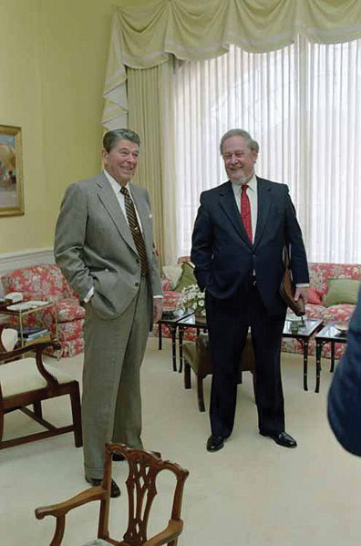
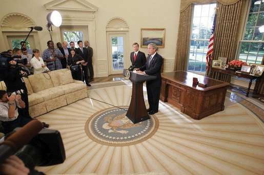

After reading this section, you should be able to answer the following questions:
The president nominates all federal judges, who must then be approved by the Senate. President George W. Bush’s nominees were screened by a committee of fifteen White House and justice department officials headed by the White House legal counsel. They looked for ideological purity, party affiliation, and agreement with the president on policy issues and often turned to the Federalist Society, a conservative lawyers’ group, for nominees.
The appointments of judges to the lower federal courts are important because almost all federal cases end there.For a study of lower federal court selection, see Sheldon Goldman, Picking Federal Judges (New Haven, CT: Yale University Press, 1997). Through lower federal judicial appointments, a president “has the opportunity to influence the course of national affairs for a quarter of a century after he leaves office.”From Tom Charles Huston to President Richard Nixon, 25 March 1969, in WHCF ExFG 50, the Judicial Branch (1969–1970), Box 1, White House Central Files, FG 50, Nixon Presidential Materials Project, College Park, Maryland.
Once in office, federal judges can be removed only by impeachment and conviction. Unless compelled to retire due to illness or incapacity, judges may time their departures so that their replacements are appointed by a president who shares their political views and policy preferences.Lee Epstein and Jeffrey A. Segal, The Politics of Judicial Appointments (New York: Oxford University Press, 2005). Supreme Court Justice Souter retired in 2009 and Justice Stevens retired in 2010, enabling President Obama to nominate, and the Democratic-controlled Senate to confirm, their successors.
In nominating Supreme Court justices, presidents seek to satisfy their political, policy, and personal goals.Michael Comiskey, Seeking Justices: The Judging of Supreme Court Nominees (Lawrence: University Press of Kansas, 2004), thinks the confirmation process is acceptable and effective; but Christopher L. Eisgruber, The Next Justice: Repairing The Supreme Court Appointments Process (Princeton, NJ: Princeton University Press, 2007), wants the selection process to produce justices with moderate judicial philosophies; and Richard Davis, Electing Justice: Fixing the Supreme Court Nomination Process (New York: Oxford University Press, 2005), thinks the process is a mess and proposes various ways of electing Supreme Court justices. They do not always succeed; justices sometimes change their views over time or may surprise the president from the start. “Biggest damfool mistake I ever made” said President Dwight D. Eisenhower about his appointment of Chief Justice Earl Warren, who led the Supreme Court’s liberal decisions on civil rights and criminal procedure.
The following are some other factors that can influence presidents’ choices of Supreme Court nominees:See David Alistair Yalof, Pursuit of Justices: Presidential Politics and the Selection of Supreme Court Nominees (Chicago: University of Chicago Press, 1999), 4–7 and 17.
Nominations go to the Senate Judiciary Committee, which usually holds hearings. Whether senators should concern themselves with anything more than the nominee’s professional qualifications is often debated. Arguably, “nothing in the Constitution, historical experience, political practice, ethical norms, or statutory enactments prohibits senators from asking questions that reveal judicial nominees’ views on political and ideological issues.”Albert P. Melone, “The Senate’s Confirmation Role in Supreme Court Nominations and the Politics of Ideology versus Impartiality,” Judicature 75, no. 2 (August–September 1991): 529; also Nancy Scherer, Scoring Points: Political Activists and the Lower Federal Court Confirmation Process (Palo Alto, CA: Stanford University Press, 2005).
The next step is for the Judiciary Committee to vote on whether or not to send the nomination to the Senate floor. If it reaches the floor, senators then can vote to confirm or reject the nomination, or filibuster so that a vote is delayed or does not take place. Fewer than half of recent nominees to the federal appeals courts have been confirmed.Sarah A. Binder and Forrest Maltzman, Advice and Dissent: The Struggle to Shape the Federal Judiciary (Washington, DC: Brookings Institution Press, 2009).
Presidents have few opportunities to nominate Supreme Court justices, so the media provide intensive coverage of every stage of the nomination, from the time an incumbent justice leaves office until a replacement is confirmed by the Senate. The scrutiny is not necessarily damaging. President Clinton’s nominees, Ruth Bader Ginsberg and Stephen Breyer, enjoyed Senate confirmation by votes of 97–3 and 87–9, respectively.
Sometimes the media determine a nominee’s fate. President Reagan’s nominee Douglas H. Ginsburg withdrew when news stories reported that he had smoked marijuana with some of his Harvard Law School students. The media were also intimately involved with the fates of Robert H. Bork and Clarence Thomas, particularly through their coverage of the Senate Judiciary Committee’s hearings.
Bork was a distinguished lawyer who had taught at Yale University, served as solicitor general and acting attorney general of the United States, and was a judge on the US Court of Appeals for the DC Circuit. He opposed civil rights laws and such Supreme Court decisions as Roe v. Wade allowing abortion. More than three hundred, mostly liberal, interest groups publicly opposed him.
The anti-Bork coalition adroitly used the media against him. It barraged two thousand journalists and seventeen hundred editorial writers with detailed packets of material criticizing him. It sponsored television and newspaper advertisements attacking him and asking Americans to urge their senators to vote against him.Michael Pertschuk and Wendy Schaetzel, The People’s Rising (New York: Thunder’s Mouth Press, 1989), 155; also Ethan Bronner, Battle for Justice: How the Bork Nomination Shook America (New York: Norton, 1989).
Figure 15.5 Robert Bork with President Reagan
Self-confident at his public nomination by President Reagan, Bork would be defeated by the campaign waged against him by his opponents.
The nominee, touted by his supporters as urbane, witty, and brilliant, contributed to his demise by the impression he made on national television during five contentious days, during which he candidly testified about his legal and political philosophy, defended his views on issues and cases, and responded to questions from members of the Senate Judiciary Committee. Having refused the practice sessions (known as “murder boards”Sessions in which nominees for the Supreme Court are coached by administration officials on how to respond successfully to tough questions from senators at their hearings.) and coaching offered by the White House, the professorial, scraggly bearded Bork was outmaneuvered by his opponents on the committee, who came up with such sound bites—featured on the evening television news—as, “You are not a frightening man, but you are a man with frightening views.”Senator Howard Metzenbaum (D.-Ohio), cited in Mark Gitenstein, Matters of Principle (New York: Simon & Schuster, 1992), 239.
The Senate rejected the nominee on October 23, 1987, by a vote of 58–42. The process generated a new verb in politics: “to bork,”To defeat a Supreme Court nominee by means of a lobbying and public relations campaign using and facilitated by the media. which means to unleash a lobbying and public relations campaign, using and facilitated by the media.
The Bork Hearings
Watch video of the Bork hearings online at http://www.c-spanarchives.org/program/994-2&showFullAbstract=1.
When a similar attack was waged against Clarence Thomas in the fall of 1991, the White House and the nominee’s defenders were ready with a highly organized public relations campaign.
President George H. W. Bush nominated Clarence Thomas for the seat of retiring Justice Thurgood Marshall. Both were African Americans. But in contrast to the liberal Democrat Marshall, Thomas was a conservative Republican. The nomination was opposed by leaders of liberal and feminist organizations, and supported by their conservative counterparts. It divided the civil rights community, which wanted an African American justice, but not one as conservative as Thomas.
Because the nomination was shrewdly announced on the Monday afternoon preceding the Fourth of July weekend, reporters had time to transmit only the favorable story, spoon-fed from the White House, of the nominee’s rise from poverty to prominence. Later, they reported some of his more controversial decisions during his one-year tenure as a federal appeals court judge.
News coverage of the nomination resumed with the Senate Judiciary Committee’s hearings during which Thomas, in contrast to Bork, steadfastly avoided taking clear stands on controversial issues. He had been advised by his White House advisors to “(1) stress his humble roots; (2) [not] engage Senators in ideological debate; and (3) stonewall on abortion.”Mark Gitenstein, Matters of Principle (New York: Simon & Schuster, 1992), 337. At the conclusion of the hearings, Senate confirmation seemed narrowly assured. Then law professor Anita Hill accused Thomas of having engaged in sexual improprieties when she worked for him at the Department of Education and the Equal Employment Opportunity Commission.
With the salacious accusations, media coverage skyrocketed, especially when the hearings reopened featuring Hill’s testimony and Thomas’s rebuttals. Entertainment media made light of the issue: on Saturday Night Live, Chris Rock observed that “if Clarence Thomas looked like Denzel Washington this thing would never have happened.” Thomas angrily accused his detractors of attempting “a high-tech lynching for uppity blacks.” In the end, most senators voted as they had been leaning prior to Hill’s testimony. Thomas was confirmed by a vote of 52–48.
The Thomas Hearings
Watch the Thomas hearings online at http://www.c-spanarchives.org/program/Day1Part1.
In July 2005, President George W. Bush made the first Supreme Court nomination in eleven years. He chose John G. Roberts Jr., a federal appeals court judge on the DC Circuit, to replace the moderate Republican Sandra Day O’Connor, who was retiring. Roberts was then nominated to be chief justice after the death of incumbent William H. Rehnquist.
Figure 15.6
The media’s intense attention to Supreme Court nominees is caught in this photograph showing the gaggle of journalists around John G. Roberts as he meets with the president.
Source: Photo courtesy of the White House (Paul Morse), http://commons.wikimedia.org/wiki/File:Johnroberts3.jpeg.
During three days of testifying before the Senate Judiciary Committee, the erudite and engaging Roberts deflected questions by comparing judges to umpires and saying that he would be guided by the law. On September 29, 2005, the Republican-controlled Senate approved him as chief justice of the US Supreme Court by a vote of 78–22.
John G. Roberts’ Opening Statement
Watch the opening statement of John G. Roberts online at http://www.c-spanclassroom.org/Video/44/Judge+John+Roberts+Opening+Statement+at+Confirmation+Hearing+for+US+Chief+Justice.aspx.
Bush next turned to fill Sandra Day O’Connor’s vacant seat. He was under pressure, even in public statements from his wife, to appoint a woman to succeed O’Connor. He nominated his White House general counsel and close friend, Harriet Miers. She had never served as a judge, had little expertise on constitutional matters, and held few reported positions on important issues.
Conservatives, including officeholders, interest-group leaders, columnists, pundits, and bloggers, rejected the president’s assurance that she was a candidate they could trust. Leaders of the Senate Judiciary Committee rejected her answers to their questions as “inadequate, insufficient and insulting.” Senators expressed doubts to the news media about her qualifications and knowledge of the Constitution. After twenty-four days of a ferocious barrage of criticism, all reported and amplified by the media, Ms. Miers withdrew from consideration.
President Bush then nominated a federal appeals court judge, Samuel A. Alito Jr. The judge had a record from his time in the Reagan administration and from fifteen years of judicial decisions of deferring to the executive branch, favoring business, and rejecting abortion rights.
In testifying before the members of the Senate Judiciary Committee, Judge Alito followed the stonewalling script. Nothing he said could be used against him by Democratic senators on the committee or by the media. A dramatic moment in his favor, shown on television, occurred when his wife, upset by the questioning directed at him, walked out of the hearings in tears. Soon after the hearings, Judge Alito was approved by 58–42 (54 Republicans plus 4 Democrats against 40 Democrats plus 1 Republican and 1 Independent).
The Miers Nomination
Learn more about the Miers nomination online at http://www.npr.org/series/4933926/harriet- miers-withdraws-as-high-court-nominee.
Learn more about the Alito nomination online at http://www.npr.org/series/4982475/alito-s- supreme-court-nomination-confirmed.
When Justice Souter resigned from the Court, President Obama, making his first nomination, picked Sonia Sotomayor to replace him. Her confirmation hearings in July 2009 followed the script that had worked for Roberts and Alito. She refused to opine about cases or identify a judicial philosophy other than “fidelity to the law.” Sotomayor would be the first Hispanic and third woman ever appointed to the Court. She would not change its ideological balance, and there were no media revelations to derail her prospects. Since the Democrats had sixty votes in the Senate, it came as no surprise that she was confirmed by a vote of 68–31.
A similar pattern followed the resignation of Justice John Paul Stevens. Obama’s nominee, Solicitor General and former Dean of the Harvard Law School Elena Kagan, was unlikely to change the ideological balance on the Court. She, too, largely stonewalled the hearings and was confirmed by the Senate on August 5, 2010, by a vote of 63–37.
The Sotomayor Nomination
Learn more about the Sotomayor nomination online at http://www.npr.org/series/106462774/sonia- sotomayor-s-supreme-court-nomination.
Learn more about the Kagan nomination online at http://www.npr.org/series/126664425/elena- kagan-s-supreme-court-nomination.
Presidents usually look to nominate as federal judges people who share their ideological, policy, and partisan views. Nominations attract intense scrutiny from interest groups and the media and can be controversial and contentious. They are subject to confirmation by the Senate, which may delay, block, or approve them. We explain why the nominations of Robert H. Bork and Harriet Miers failed and why those of Clarence Thomas, John G. Roberts Jr., Samuel A. Alito Jr., Sonia Sotomayor, and Elena Kagan were successful.